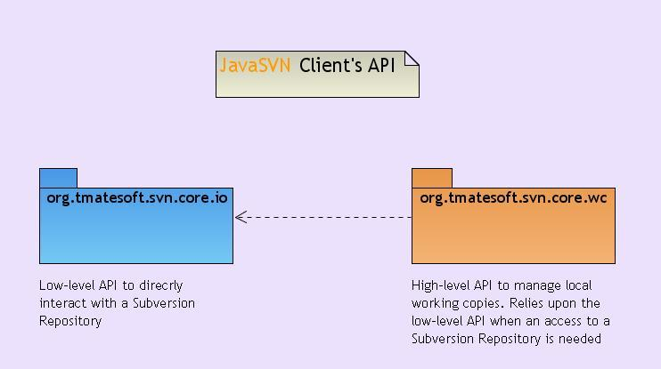

JavaSVNTM - the only pure JavaTM Subversion client library in the World.

JavaSVNTM is a powerful pure java Subversion (SVN) client library. This means that users of the library, i.e. java applications
do not have to include SVN native binaries or javahl bindings to work with a Subversion repository.
The library represents two main concepts for developers who use a Subversion repository in their projects:
- Low-level API - the package org.tmatesoft.svn.core.io - a solution for those developers who doesn't need to work with the native
Subversion high-level format known as 'Working Copy' - that is when all local files are stored in a filesystem and all version controll
metadata is concentrated in .svn directories. For instance, those developers who would like to store their versioned files in data bases
will certainly find this package pretty good for their purposes.
- High-level API - the package org.tmatesoft.svn.core.wc - this is a set of classes and interfaces designed to provide developers means
for working particularly with the native Subversion format - 'Working Copy'. All the commands supported by the SVN command line client can be
also easily performed by using this high-level API. Obviously in those cases when an operation needs an access to a repository this high-level API
uses the low-level one.